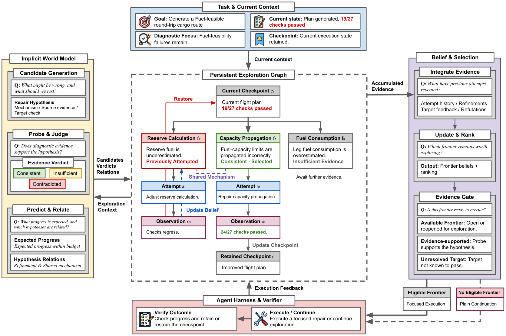

BeliefWeaver
Failure Recovery via Belief Updates
and World Modeling
for Long-Horizon Agents
1University of Maryland2Google3MBZUAI
* Equal contribution
A failed attempt should change
what comes next.
Teacher final score
vs. native Terminus-2
Distilled 9B final score
SFT + OPD vs. native Terminus-2
Lower teacher API cost
SFT + OPD vs. matched teacher
Paper-reported results across three terminal benchmarks. Metrics and comparison details ↓
01 / OVERVIEW
Recovery that
builds on evidence.
An agent can fail because of a decision made many steps earlier. Trying again is useful only if the next attempt benefits from what the last one revealed.
BeliefWeaver maintains a persistent relational belief state over repair hypotheses, attempts, observations, and checkpoints. New evidence changes the priorities of related hypotheses—even across rollback. An implicit world model reasons about possible repairs and expected progress, while a separate diagnostic gate determines which repairs are ready to execute.
Recurring reasoning roles can then be distilled into a 9B student through supervised fine-tuning and on-policy distillation.
THE PAPER IN A MINUTE
From failure to a better next step.
Research overview · English synthetic narration · On-screen captions · Diagrams illustrate the method, not a live agent run.
Read the video transcript
The transcript is also available as English captions.
02 / HOW IT WORKS
Remember. Reconsider. Recover.
A belief score ranks a repair.
Diagnostic evidence gates its execution.
Make the failure testable.
The implicit world model proposes repair hypotheses and diagnostic probes, estimates potential progress, and identifies relations between candidate repairs.

03 / MAIN RESULTS
Better recovery, across benchmarks.
Compare the native agent, the full teacher framework, and the distilled students. Final score measures test-pass fraction or graded reward.
Aggregate final score across the three benchmark suites.
Values are means ± 95% bootstrap confidence-interval half-widths. All results are from the paper; the visualization does not report new runs.
View the full results, including exploration efficiency
| Method | TB2 Final | TB3 Final | LHTB Final | Overall Final | Step-AUC | Time-AUC |
|---|
SC: Structured Continuation. WM: WM Grounding. Step-AUC and Time-AUC summarize progress over step and time budgets; higher is better.
04 / DISTILLING THE REASONING
A smaller model.
A cumulative recovery loop.
Transfer four recurring world-model roles to Qwen3.5-9B with SFT, then refine the student on states it visits through on-policy distillation.
The controller, executor, and belief-update rules stay the same. SFT + OPD + Gen also uses a separate student adapter for hypothesis generation. Prospective evaluation remains teacher-based.
Teacher API cost
Estimated $ / task ↓54.8% lower teacher API cost
81.9% lower teacher API cost
Paper-reported savings vs. the matched teacher. Excludes executor, student-serving, and training costs. Accounting rates: $1 / $4 per million input / output tokens. Table 4 ↗
05 / EXPLORE FURTHER
Read it. Run it. Build on it.
The paper
Method, experimental setup, ablations, and limitations.
arXiv:2610.1808202 ↗The code
Installation, method configurations, evaluation, and training.
GitHub · Private repository03 ↓The short video
A narrated visual introduction to the recovery loop and results.
Download MP4Evaluated on terminal benchmarks with verifier feedback and checkpoint restoration. Incorrect world-model predictions can still misrank repairs; transfer to environments with sparse feedback or unreliable rollback remains an open question.
Citation
@misc{wu2026failure,
title={Failure Recovery via Belief Updates and World Modeling for Long-Horizon Agents},
author={Xiyang Wu and Zhichao Liu and Shengxin Zhang and Zongxia Li and Ming Li and Tianyi Zhou and Dinesh Manocha},
year={2026},
eprint={2610.18082},
archivePrefix={arXiv},
primaryClass={cs.LG},
url={https://arxiv.org/abs/2610.18082}
}